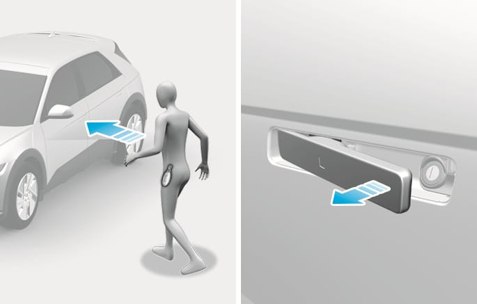
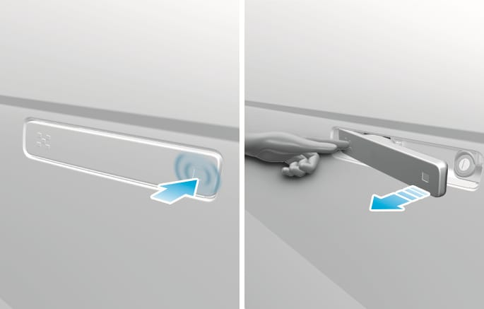
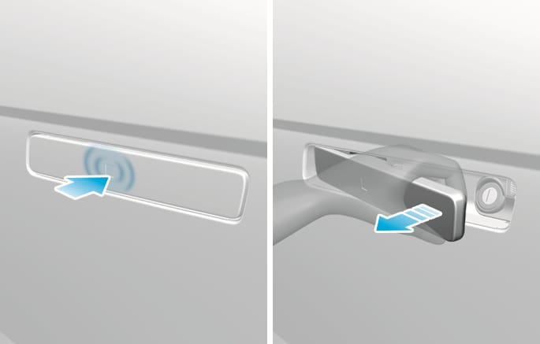

차량 밖에서 잠금/잠금 해제
스마트 키를 휴대하고 도어 핸들의 잠금/잠금 해제 센서를 터치하십시오.
-
비상 경고등이 1회 깜빡이고, 알림음이 울리며 모든 도어가 잠깁니다.
'접근 시 잠금 해제'를 설정한 경우

2C_OutsideDoorHandle_2
인포테인먼트 시스템 설정 메뉴에서 차량 > 도어 > 접근 시 잠금 해제를 설정한 경우, 스마트 키를 휴대하고 앞좌석(운전석/동승석) 도어 바깥쪽 도어 핸들 측으로 접근(1 m 이내)하면 자동으로 잠금 해제되면서 바깥쪽 도어 핸들이 튀어 나옵니다. 이때 비상 경고등이 2회 깜빡이며 확인음도 2회 울립니다.
'접근 시 잠금 해제'를 설정하지 않은 경우

2C_OutsideDoorHandle_1

2C_OutsideDoorHandle
스마트 키를 휴대하고 도어 핸들의 잠금/잠금 해제 센서를 터치하십시오.
-
수동식
비상 경고등이 2회 깜빡이고, 알림음이 울리며 모든 도어의 잠금이 해제됩니다. 도어의 앞부분을 누르면 바깥쪽 도어 핸들이 튀어 나옵니다.
-
자동식
비상 경고등이 2회 깜빡이고, 알림음이 울리며 모든 도어의 잠금이 해제되면서 바깥쪽 도어 핸들이 튀어 나옵니다.
-
스마트 키의 도어 잠금/잠금 해제(
Ď /ď ) 버튼을 누르거나 디지털 키를 도어 핸들의 센서에 2초 이상 태깅해 도어를 잠그거나 잠금 해제할 수도 있습니다. -
센서를 터치해 도어를 잠근 경우, 3초 동안은 다시 센서를 터치해도 잠금이 해제되지 않습니다.
-
다음과 같은 경우, 도어 잠금 버튼을 누르거나 센서를 터치할 때 경고음이 울리고 도어가 잠기지 않습니다.
-
스마트 키가 차 안에 있는 경우
-
차량의 시동이 꺼지지 않은 경우
-
도어, 후드 또는 테일게이트가 열려 있는 경우
-
-
인포테인먼트 시스템 설정 메뉴의 차량 > 도어 > 2회 눌러 전체 잠금 해제(세이프티 언락 기능)를 설정한 경우, 잠금 해제 시 운전석 도어의 잠금만 해제됩니다. 모든 도어의 잠금을 해제하려면 4초 이내에 잠금 해제 버튼을 다시 한 번 누르십시오.
-
잠금 해제 후 30초 이내에 도어를 열지 않으면 도어가 다시 잠깁니다.
도어를 열거나 닫을 경우 주의를 하지 않으면 도어와 차체 사이에 손가락 등 몸이 끼어 다칠 수 있습니다.
-
겨울철에 도어 핸들이 얼어붙어 열리지 않는 경우 핸들을 가볍게 두드리거나 기타 다른 방법으로 따뜻하게 하여 얼음을 먼저 제거하십시오.
자세한 내용은 '비상 키 사용하기' 의 '도어 핸들에서 얼음 제거하기'를 참고하십시오.
-
무리한 힘을 가하거나 날카로운 도구를 사용하지 마십시오. 도어 핸들이 파손될 수 있습니다.
-
도어를 정확히 닫지 않으면 다시 열릴 수 있습니다.
-
차량을 잠금 해제된 상태로 오랫동안 방치하지 마십시오. 배터리가 저전압 상태가 되면 운전석을 제외한 다른 도어를 열 수 없습니다.
-
비상 키를 차 안에 두지 마십시오. 비상시 도어를 열 수 없습니다.
-
차량 배터리의 전압이 떨어지면 운전석 도어가 자동으로 비상 모드로 전환됩니다. 이 상태에서 도어 핸들을 당기면 “척척” 소리가 들릴 수 있으나, 이는 모터가 작동하기 때문에 발생하는 정상적인 작동음입니다
-
배터리 방전 등으로 인해 도어 핸들이 정상적으로 작동하지 않는 경우 도어 핸들의 앞부분을 눌러 도어 핸들을 수동으로 튀어나오게 할 수 있습니다. 도어 핸들이 튀어나오면 키를 사용하여 도어 잠금을 해제하고 핸들을 잡아당겨 도어를 여십시오.
자세한 내용은 '비상 키 사용하기'를 참고하십시오.
-
잠금이 해제된 경우라도 'R'(후진)로 변속하면 바깥쪽 도어 핸들이 안으로 들어갑니다.
-
자동 도어 잠금 기능 사용 시, 'R'(후진)로 변속하면 바깥쪽 도어 핸들이 안으로 들어가는 동시에 도어가 잠깁니다.
-
도어 잠금이 해제된 상태에서 3 km/h-15 km/h 이내의 속도로 주행하는 경우, 잠금 해제 상태는 유지되고 도어 핸들만 안으로 들어갑니다.
-
오토 플러시 도어 핸들이 작동할 때 실내에서 작동 소리가 날 수 있습니다.
센서 타입 도어 핸들 관련 주의사항
-
세차 시 스마트 키 또는 디지털 키를 차량으로부터 2 m 이상 떨어진 곳에 보관하고 키를 분실하지 않도록 주의하십시오.
-
스마트 키 또는 디지털 키가 차량 근처에 있을 때 센서에 물이 묻거나 물걸레 등이 접촉하는 경우 도어 잠금 또는 잠금 해제 기능이 작동하며 경고음이 발생할 수 있습니다.
-
세차 중 도어 잠금 기능이 작동해 경고음이 발생하면 시동 상태를 'ACC' 또는 'ON' 상태로 유지하고 스마트 키를 차 안에 두십시오.
-
세차가 끝나면 스마트 키 또는 디지털 키를 다시 휴대하십시오.
-
-
세차 시나 비 오는 날 주행 시 터치 센서의 오동작을 방지하기 위해 센서 감도가 감소할 수 있으나, 이는 고장이 아닙니다.
-
장갑을 착용하거나 급작스럽게 차량에 접근해 센서를 터치하는 경우 센서가 터치를 인식하지 못할 수 있습니다.
-
자동 세차 시에는 시동을 'ACC' 또는 'ON' 상태로 유지하고, N(중립)으로 변속한 후 세차기에 진입하십시오(6장 'N(Neutral): 중립'의 '중립(N) 유지 모드' 참고).
운전자가 시동을 끈 후 스마트 키 또는 디지털 키(UWB)를 휴대하고 차에서 일정 거리를 벗어나면 자동으로 도어가 잠기는 기능을 제공합니다.
운전자가 차량에서 일정 거리 이상 벗어났을 때 자동으로 도어가 잠기도록 하려면 인포테인먼트 시스템의 설정 > 차량 > 도어 > 스마트 키 이탈 시 자동 잠금을 선택하십시오.
-
도어 및 테일게이트가 모두 닫힌 상태에서만 작동합니다.
-
'접근 시 잠금 해제'가 가능한 스마트 키 또는 디지털 키로만 작동합니다.
자동으로 도어가 잠기면 비상등이 깜빡이고 도어 잠금 경고음이 울립니다.
다음과 같은 경우 자동 잠금 기능이 작동하지 않습니다.
-
실내에 다른 스마트 키 또는 디지털 키(UWB)가 존재할 때
-
도어 및 테일게이트를 닫고 차에서 약 5분이내 벗어나지 않았을 때
-
모든 도어 및 테일게이트가 완전히 닫히지 않은 상태에서 먼저 키를 가지고 벗어났을 때
-
도어 시스템이 고장났을 때
-
차량의 배터리가 저전압 또는 고전압 상태일 때
-
스마트키 배터리가 저전압일 때
-
차량의 전원 상태가 ACC 이상일 때
-
스마트 키와 디지털 키는 무선 통신 방식이 다르기 때문에 자동 잠금 가능이 작동하는 범위가 다를 수 있습니다.
-
NFC 방식의 디지털 키나 카드 키를 소지한 상태에서는 이 기능이 작동하지 않습니다.
-
차량에 유아가 탑승한 상태에서 의도치 않게 자동 잠금 기능이 작동할 경우 심리적으로 위축되거나 패닉 상태가 될 수 있으므로 주의하십시오.
-
스마트 키 또는 디지털 키(UWB)와 차량간 무선 통신이 잘 되지 않는 상황에서는 자동 잠금 기능이 작동하지 않을 수 있으므로 차량을 벗어날 때 자동 자금 기능의 작동 여부(비상등이 깜빡이고 도어 잠금 경고음이 울리는 지)를 확인하십시오 . 스마트 키와 차량간 무선 통신이 잘 되지 않는 상황에 대한 자세한 내용은 '스마트 키 사용 시 주의사항'을 참고하십시오.